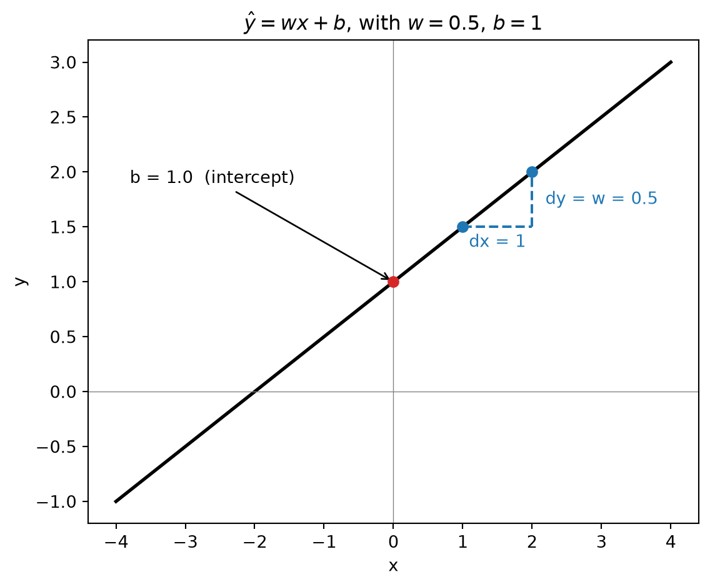
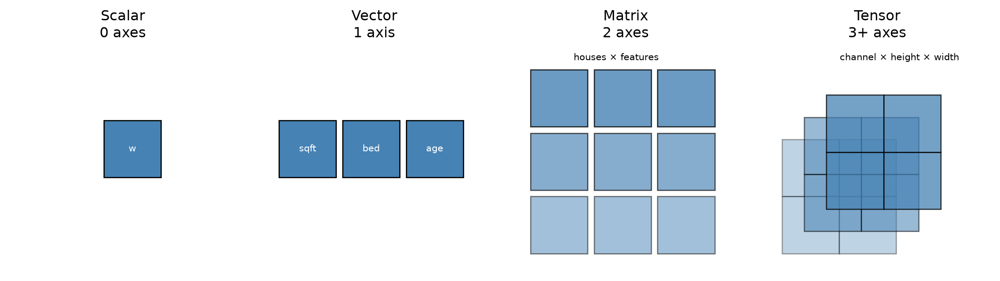

Linear Algebra & Calculus for Deep Learning
Advanced Machine Learning
Sam Ogden
DRAFT
This slide deck is still under active development. Expect changes before it is finalized.
Learning objectives
- Build a concrete, geometric sense of what a “dimension” is — a feature vector vs. a multi-dimensional measurement
- Compute partial derivatives and assemble them into a gradient
- See the chain rule compose two functions — and watch autograd automate exactly that
- Use estimators (mean, std) to standardize features, and know what “estimator” means
Optimizing by guessing
What is a model?
- A model is a function with parameters we can tune
- The simplest useful one is linear: \hat{y} = wx + b
w— slope: how muchŷchanges per unit ofxb— intercept: where the line sits whenx = 0- This is the same
Ax + byou’ve already seen — just one input, one output
Quick aside: this generalizes to vectors
- The example above used scalars — one
x, onew— to keep things concrete - In general, a model takes a whole feature vector x and a matching weight vector w: \hat{y} = \mathbf{w} \cdot \mathbf{x} + b
- Same idea, same shape (
Ax + b) — just more numbers doing the same job - We’ll build up exactly what w and x mean, and what that
·is doing, in a few slides
How do we improve a model?
- We have a way to score any choice of
(w, b): mean squared error - So… how do we pick a better
(w, b)?
Simplest possible idea: nudge them randomly, and see what happens.
Random search, live
#| '!! shinylive warning !!': |
#| shinylive does not work in self-contained HTML documents.
#| Please set `embed-resources: false` in your metadata.
#| standalone: true
#| components: [viewer]
#| viewerHeight: 600
from shiny import App, render, ui, reactive
import matplotlib.pyplot as plt
import numpy as np
rng = np.random.default_rng(7)
true_slope = 2.5
true_intercept = -3.0
error_sd = 5.0
x = rng.uniform(0, 10, 40)
epsilon = rng.normal(0, error_sd, 40)
y_observed = true_slope * x + true_intercept + epsilon
def mse(w, b):
y_pred = w * x + b
return float(np.mean((y_observed - y_pred) ** 2))
STEP_SD_W = 0.4
STEP_SD_B = 1.5
TRAIL_LEN = 40
app_ui = ui.page_fluid(
ui.layout_columns(
ui.card(
ui.card_header("choose_next_value(): random"),
ui.input_action_button("step_once", "Random update", class_="btn-primary"),
ui.input_action_button("step_ten", "Skip ahead 10x", class_="btn-secondary"),
ui.input_action_button("reset", "Reset", class_="btn-outline-danger"),
ui.hr(),
ui.input_checkbox("greedy", "Only keep steps that improve", value=False),
ui.hr(),
ui.output_text("state_text"),
),
ui.card(
ui.output_plot("walk_plot")
),
col_widths=(4, 8),
)
)
def server(input, output, session):
state = reactive.Value({"w": 0.0, "b": 0.0, "mse": mse(0.0, 0.0), "step": 0})
history = reactive.Value([])
def do_step():
s = state.get()
w_new = s["w"] + rng.normal(0, STEP_SD_W)
b_new = s["b"] + rng.normal(0, STEP_SD_B)
mse_new = mse(w_new, b_new)
improved = mse_new < s["mse"]
step = s["step"] + 1
hist = history.get() + [
{"w": w_new, "b": b_new, "mse": mse_new, "improved": improved, "step": step}
]
history.set(hist[-TRAIL_LEN:])
if improved or not input.greedy():
state.set({"w": w_new, "b": b_new, "mse": mse_new, "step": step})
else:
state.set({**s, "step": step})
@reactive.effect
@reactive.event(input.step_once)
def _():
do_step()
@reactive.effect
@reactive.event(input.step_ten)
def _():
for _ in range(10):
do_step()
@reactive.effect
@reactive.event(input.reset)
def _():
history.set([])
state.set({"w": 0.0, "b": 0.0, "mse": mse(0.0, 0.0), "step": 0})
@output
@render.text
def state_text():
s = state.get()
return f"Step {s['step']} | w = {s['w']:.2f}, b = {s['b']:.2f} | MSE = {s['mse']:.1f}"
@output
@render.plot
def walk_plot():
s = state.get()
hist = history.get()
fig, ax = plt.subplots(figsize=(8, 5))
ax.scatter(
x, y_observed, s=45, alpha=0.7, color="steelblue", zorder=3,
label="Observed data"
)
x_line = np.linspace(0, 10, 200)
n = len(hist)
for i, h in enumerate(hist):
age = n - i
alpha = max(0.05, 1 - (age - 1) / TRAIL_LEN)
color = "tab:blue" if h["improved"] else "tab:red"
y_line = h["w"] * x_line + h["b"]
ax.plot(x_line, y_line, color=color, alpha=alpha * 0.8, linewidth=1.5)
y_current = s["w"] * x_line + s["b"]
ax.plot(
x_line, y_current, color="black", linewidth=3,
label=f"Current (step {s['step']})"
)
ax.set_xlim(0, 10)
ax.set_ylim(float(y_observed.min()) - 10, float(y_observed.max()) + 10)
ax.set_xlabel("x")
ax.set_ylabel("y")
ax.legend(loc="upper left")
ax.set_title("Blue = improved, red = made it worse")
return fig
app = App(app_ui, server)This works… eventually
- Blue lines improved the fit, red lines made it worse — and by default, we take the step either way
- Check “only keep steps that improve” — about half the attempts still get thrown away (red), but it actually converges faster, because it never backslides
- Either way: there’s no sense of direction, only whether we got lucky
- With only two parameters this is already slow. Real models have millions.
The question of the week: what if choose_next_value() didn’t have to guess?
Vectors, matrices, dimensions
What does “dimension” mean?
- Dimension means how many distinct input values we have
- One house:
[sqft, bedrooms, age]
- One house:
- It can also describe the shape of our data
- A greyscale image that is 28x28 would have shape
(1, 28, 28), so 784 input dimensions - It is also “2D” in the colloquial sense
- A greyscale image that is 28x28 would have shape

Note
We can have both of these combined! For instance, [sqft, bedrooms, age, (1, 28, 28)]
A feature vector
torch.Size([3])- 3 numbers, 3 different things — shape
(3,) - Position matters because we’ve now chosen a convention for the data
- In this dataset:
- index 0 always means sqft
- index 1 always means bedrooms
- index 2 always means age
- In this dataset:
A multi-dimensional measurement
- Unlike the feature vector, no axis here is a fundamentally different kind of thing
- Axis 0 is “which channel,” axis 1 is “which row,” axis 2 is “which column” — all just more pixels
.shapetells you the size of each axis, but not which axis is which — that’s a convention you have to know separately (here: channel, then height, then width)
Tensors: one word for all of these

- Scalar (0 axes) — a single number, like our
w - Vector (1 axis) — our feature vector
[sqft, bedrooms, age] - Matrix (2 axes) — a batch of feature vectors, one row per house
- Tensor (3+ axes) — our image: channel, height, width
- “Tensor” isn’t new math — it’s just the general word for “however many axes you need”
- Once you think in tensors, you stop asking “is this a vector or a matrix?” and just ask “what does each axis mean?”
Important Tensor Math
How big is a vector? Norms
- L2 norm — straight-line length: \|\mathbf{x}\|_2 = \sqrt{\textstyle\sum_i x_i^2}
- L1 norm — total distance if you could only move along axes: \|\mathbf{x}\|_1 = \textstyle\sum_i |x_i|
Why norms matter: measuring importance
- “Size” here rarely means literal length — it usually means relative importance
- A large weight → that feature has a big influence on the prediction
- A large gradient → that parameter is about to change a lot
- A large error vector → the model is very wrong on this example
- We’ll spend real time controlling these sizes on purpose: regularization shrinks large weights, gradient clipping caps large gradients
Dot product: two ways to think about it
- Algebraic: sum of elementwise products \mathbf{a} \cdot \mathbf{b} = \textstyle\sum_i a_i b_i
- Geometric: a measure of alignment — large when two vectors point the same way, near zero when they’re perpendicular, negative when they point opposite ways
tensor(1.)
tensor(0.)- This dual meaning — “sum of products” and “similarity” — comes back constantly: cosine similarity, attention, and beyond
Why dot products matter: measuring agreement
- In plain terms, a dot product asks “how much do these two things agree?”
- Pointing the same way → strong agreement (big positive number)
- Perpendicular → no relationship (near zero)
- Pointing opposite ways → active disagreement (big negative number)
- This is exactly how a model evaluates an input: each output is a dot product between the input and a learned weight vector — “how well does this input match what I’m looking for?”
Matrix-vector product: a batch of dot products
- Multiplying a matrix by a vector is just many dot products done at once, one per row
tensor([2., 3., 5.])
tensor(5.)- Row
iofA @ xis exactlyA[i] · x— nothing new, just done for every row together - This is what a linear layer computes: one dot product per output neuron, in parallel
What this means: a matrix is a function
- \mathbf{A}\mathbf{x} isn’t just “multiply a grid by a list” — it’s evaluating \mathbf{x} using \mathbf{A}
- Read it the same way you’d read f(x): “put \mathbf{x} into \mathbf{A}”
- Every row of \mathbf{A} is a dot product “looking for” something — the matrix-vector product asks that “how much do you agree?” question for every row, all at once
- That’s the entire forward pass of a linear layer, in one line: \mathbf{A}\mathbf{x} + \mathbf{b}
Calculus: derivatives, partials, gradients
Derivatives: a fast recap
- The derivative of f at a point is its slope there — how fast f changes as x changes
- Notation: f'(x), or \frac{df}{dx} – this latter one is much more explicit
- \frac{df}{dx} can be understood as “ratio of delta-f to delta-x” where “delta” is how we say “change in”
We only need a handlefule of rules:
| Power Rule | \frac{d}{dx} x^n = nx^{(n-1)} |
| Constant Rule | \frac{d}{dx} c = 0 |
| Constant Multiple Rule | \frac{d}{dx}\big(c \cdot f(x)\big) = c \cdot f'(x) |
| Chain Rule | \frac{d}{dx} f(g(x)) = f'(g(x)) \cdot g'(x) |
The Chain Rule: Composing two functions
- g(x) = 2x
- f(g) = g^2
- Compose them: f(g(x)) = (2x)^2 = 4x^2
Two ways to get the same derivative
- Direct: differentiate the composed function outright \frac{d}{dx}\big(4x^2\big) = 8x
- Chain rule: differentiate each piece separately, then multiply \frac{df}{dx} = \frac{df}{dg} \cdot \frac{dg}{dx} = (2g) \cdot (2) = 4g = 8x
24.0
24.0- Same answer, built from two simple pieces instead of one messier one
- This is the idea autograd is built on: break a big function into small pieces, differentiate each piece, multiply them together
Partial derivatives: one variable at a time
Our function now takes more than one input: f(x_1, x_2) = x_1^2 + 2x_2^2
Notation: \frac{\partial f}{\partial x_1}, \frac{\partial f}{\partial x_2}
A partial derivative \frac{\partial f}{\partial x_2} asks:
“How does f change if I move just x_2, holding x_1 fixed?”
- \frac{\partial f}{\partial x_1} = 2x_1 — treat x_2 as a constant, differentiate like normal
- \frac{\partial f}{\partial x_2} = 4x_2 — same move, other variable
The gradient: a vector of partial derivatives
Given the function: f(x_1, x_2) = x_1^2 + 2x_2^2
Stack the partials into a vector: \nabla f = \left[\frac{\partial f}{\partial x_1}, \frac{\partial f}{\partial x_2}\right] = [2x_1, 4x_2]
- This vector points toward steepest increase — to go downhill, step in the opposite direction, -\nabla f
- Remember
choose_next_value()? This is exactly the “smart” direction it was missing
What partial derivatives look like
- Red line: the slope along the x_1 direction, holding x_2 fixed — this is \frac{\partial f}{\partial x_1}
- Blue line: the slope along the x_2 direction, holding x_1 fixed — this is \frac{\partial f}{\partial x_2}
- The gradient just bundles these two slopes into a single vector
- Drag to rotate — get a feel for the bowl before we build on it
Try it yourself
Same plot, straight from the slide — paste this into your notebook to rotate it live, move the point, or change the function entirely:
import numpy as np
import plotly.graph_objects as go
x1 = np.linspace(-3, 3, 60)
x2 = np.linspace(-3, 3, 60)
X1, X2 = np.meshgrid(x1, x2)
F = X1 ** 2 + 2 * X2 ** 2
p1, p2 = 2.2, -1.8 # try moving this point around
fp = p1 ** 2 + 2 * p2 ** 2
t = np.linspace(-0.8, 0.8, 2)
d1 = 2 * p1 # df/dx1 at (p1, p2)
d2 = 4 * p2 # df/dx2 at (p1, p2)
fig = go.Figure()
fig.add_trace(go.Surface(x=x1, y=x2, z=F, colorscale="Viridis", opacity=0.85, showscale=False))
fig.add_trace(go.Scatter3d(x=p1 + t, y=np.full_like(t, p2), z=fp + d1 * t,
mode="lines", line=dict(color="red", width=8)))
fig.add_trace(go.Scatter3d(x=np.full_like(t, p1), y=p2 + t, z=fp + d2 * t,
mode="lines", line=dict(color="blue", width=8)))
fig.add_trace(go.Scatter3d(x=[p1], y=[p2], z=[fp], mode="markers",
marker=dict(color="black", size=5)))
fig.update_layout(scene=dict(xaxis_title="x1", yaxis_title="x2", zaxis_title="f(x1, x2)"))
fig.show()CST463 · Advanced Machine Learning